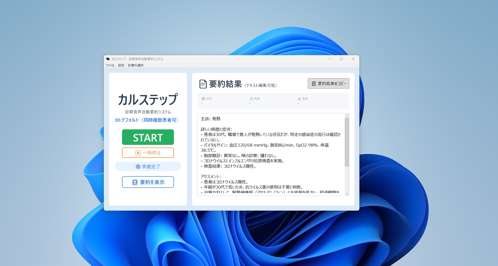
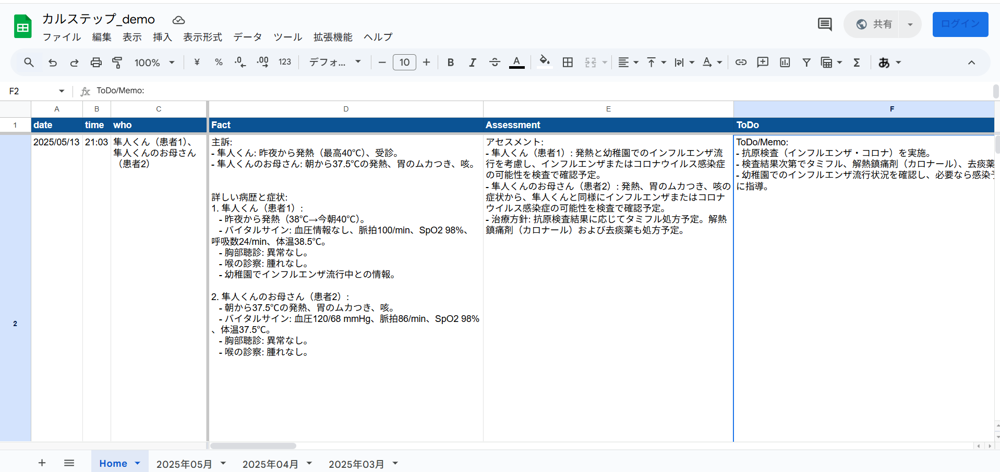

アプリ情報
アプリ名: カルステップ
対象OS: macOS 13 Ventura以降
対応機種: Appleシリコン搭載Mac・Intel搭載Mac
最新バージョン: v3.3
最終更新日: 2026年9月2日
今すぐ最新版をダウンロード
カルステップ v3.3（Mac版）をダウンロードDMGファイル形式です。ダウンロード後、DMGを開き、Karustep.appを「アプリケーション」へドラッグしてください。
マニュアル・変更履歴
- 📖 トライアル・基本操作マニュアル インストール、初期設定、macOSの権限設定、基本操作をご案内します
- ☁️ 正式版Azure設定マニュアル 正式版で利用するAzure環境とAPIキーの設定手順です
- 🔄 Mac版アップデートマニュアル DMGを使った更新方法とデータの引き継ぎをご確認いただけます
- 📝 Mac版の変更履歴はこちら Mac版の各バージョンで何が変わったかをご確認いただけます
主な機能
- フットスイッチによる直感操作、診察への集中を実現
- 高精度AIによる音声の自動要約、スプレッドシートへの自動出力
- カルテ入力時間を50%以上削減、記録業務の負担を大幅軽減
- 診療スタイルに合わせた柔軟なカスタマイズ

